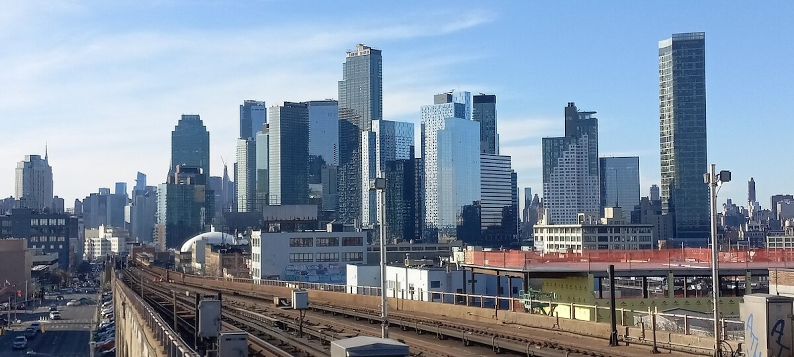
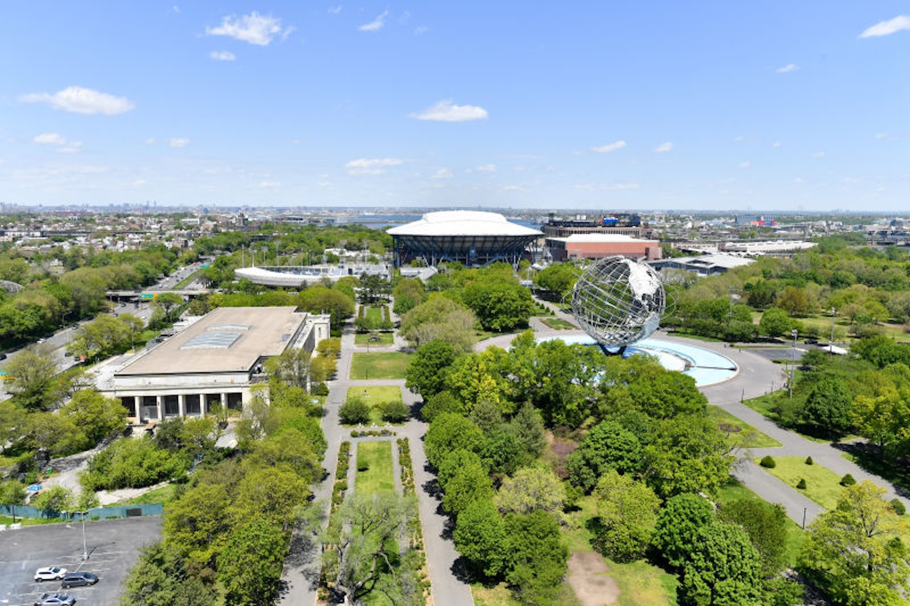
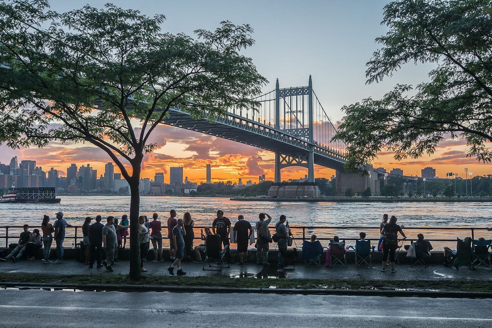
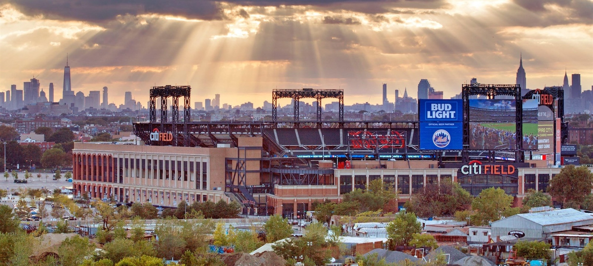
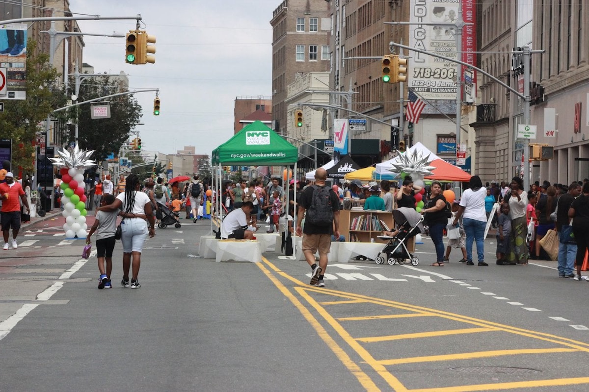
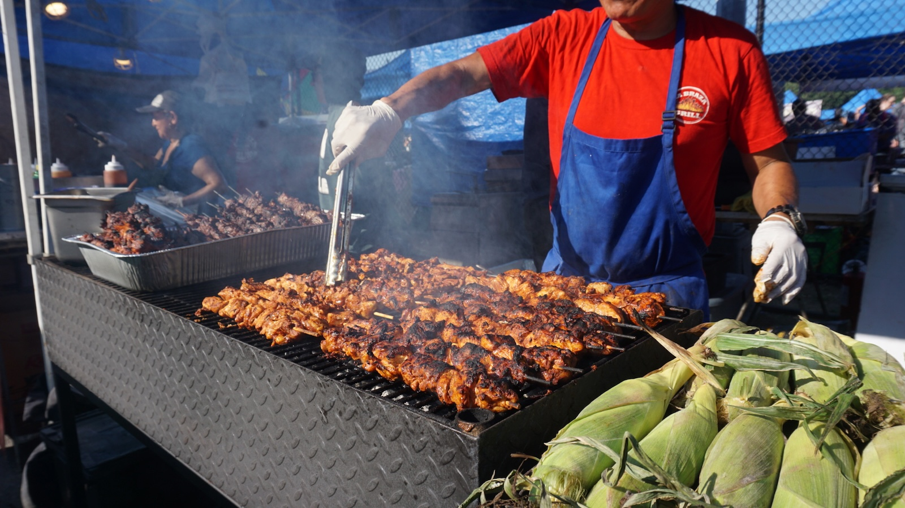

Overview & Highlights

Queens, New York is the largest and most diverse borough in New York City, known for its welcoming neighborhoods and rich cultural blend. From bustling areas like Astoria and Long Island City to quieter residential communities like Bayside and Forest Hills, Queens offers a balance of city energy and local charm. It's a place where global cuisine, community life, and easy access to Manhattan come together to create a uniquely dynamic home.
History & Regional Identity

Originally a collection of small towns and villages, Queens became part of NYC in 1898 and quickly grew alongside the rest of the city. Waves of immigration over the decades shaped its identity, making it one of the most ethnically diverse counties in the world. Its history can be seen in preserved landmarks like the Unisphere in Flushing Meadows Corona Park and the historic districts in neighborhoods such as Jackson Heights. Queens embodies the NYC spirit of opportunity, resilience, and multicultural pride.
Landscape & Climate

Queens features a mix of urban spaces, waterfronts, and parks that offer a break from the fast pace of NYC. Flushing Meadows Corona Park is one of the city's largest green spaces, home to lakes, trails, sports facilities, and the site of two World's Fairs. The Rockaway Peninsula provides beaches and boardwalks ideal for summer activities, while the borough's wide streets and quieter neighborhoods create a more relaxed environment compared to other parts of the city. With four true seasons, the landscape changes dramatically throughout the year, from snowy winters to breezy coastal summers.
Cultural Activities & Events

As one of the most culturally rich areas in the country, Queens hosts countless events and traditions representing communities from around the world. The borough is known for its incredible food scene, featuring authentic cuisine from nearly every culture, especially in neighborhoods like Flushing, Elmhurst, and Astoria. Events such as the Queens Night Market, cultural festivals, parades, concerts at Forest Hills Stadium, and sports action at Citi Field and the U.S. Open bring people together year-round. The mix of global influences and local community pride makes Queens a lively and welcoming cultural hub within New York City.
Neighborhoods & Community Life

Queens is made up of dozens of distinct neighborhoods, each with its own personality and sense of community. Areas like Astoria mix cafés, museums, and nightlife, while neighborhoods such as Jamaica, Richmond Hill, and Corona highlight the borough’s Caribbean, Latin American, and South Asian influences. Residential communities like Bayside, Whitestone, and Middle Village offer quieter streets and strong neighborhood pride. This blend of urban and suburban living makes Queens feel both energetic and homey, with friendly residents, local businesses, and cultural traditions tying each community together.
Food & Local Businesses

Queens is often considered the food capital of New York City, celebrated for its authentic, global dining scene. You can find everything from Greek tavernas in Astoria and Korean barbecue in Flushing to Caribbean bakeries, Thai street food, and Latin American markets spread across the borough. Small, family-owned businesses are the heart of Queens, bringing unique flavors and traditions to every neighborhood. Whether it’s exploring the Queens Night Market, trying a new restaurant, or visiting long-standing mom-and-pop shops, the borough offers endless opportunities to experience world cultures through food and local commerce.